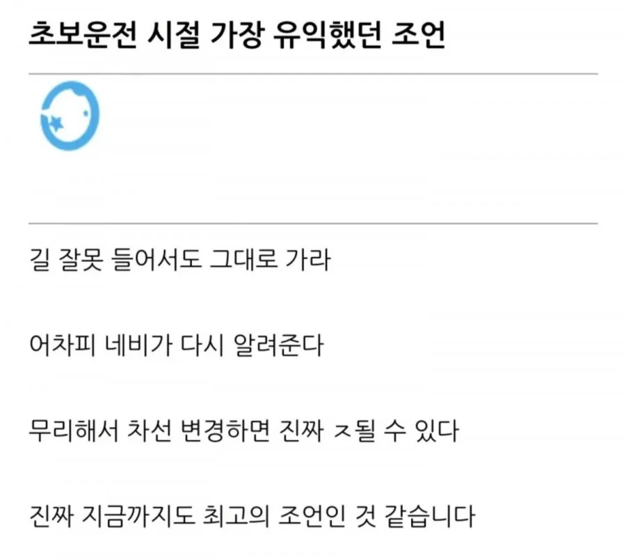

돌아가도
몇 분 차이 안 남.

돌아가도
몇 분 차이 안 남.
뭐 놓치거나 잘못보거나 해서 대충 가던길 가서 돌아간다 이러면 시간 차이는 당연히 나
특히 막히는 상황에서는 존나게 나
단지 이래저래 나의 건강과 안전에 더해서 때에 따라 돈을 아낄수도 있음
나 송도서 길 못내려서 영종도까지 드갓는디
개붕이의 모험
면허 3개월 차 때 문경 IC에서 왼쪽 가야 되는데 오른쪽 가서 30분 딜레이 된 적은 있었음 ㅠㅠ
내친구의조언
너 빼고 전부 미친새끼라고생각해라
추월할때
옆차선 앞바퀴가 혹시나 내쪽으로 오는지 주시함.
좌회전 2차선들어갈때 1차선 차와 절대 같이 돌지 않게됨(이걸로 사고 50번은 피한듯)
하지만 운전하는곳이 부산이라면?
일단 ic빠지는곳은 무조건집중하라는거임 몇km전부터
다른건 괜찮아도
부산, 세종, 위에 누가 쓴 인천공항 같은 예외가 있긴 함
근데 예외는 예외고 기본부터 알아야지
톨게이트에서 하이패스 가겠다고 후진하는 미친 놈도 있음 그런 ㅅㄲ들은 샷건으로 갈겨도 합법해줘야되는데
고속도로가 아니면 괜찮긴함
고속도로면 한 30~40분 추가되는데
그렇다 하더라도 그냥 그 시간 추가되는걸 겸허히 받아들여야함..
고속도로에선 시간 차이 많이 날수도 있음 ㅋㅋㅋ 하지만 그만큼 사고시 인명피해 확률이 높으니 그냥 네비도 못따라가는 나 자신을 탓하며 다음 안내 기다리자
본문처럼 길 잘못, 차선 잘못 들면 그대로 가라
미리 네비 전체 동선 얼추 체크해서 1~3키로 전에 내가 빠져나갈(끼어들) 차선을 이동해라
차선 이동할땐 무조건 숄더 체크 해라 - 사이드, 백 미러는 사각이 존재한다
서울은 20분추가될때도많음 존나막힐때..
너는 못하지만 너 말고 도로위 모든사람이 잘 하는 사람이다